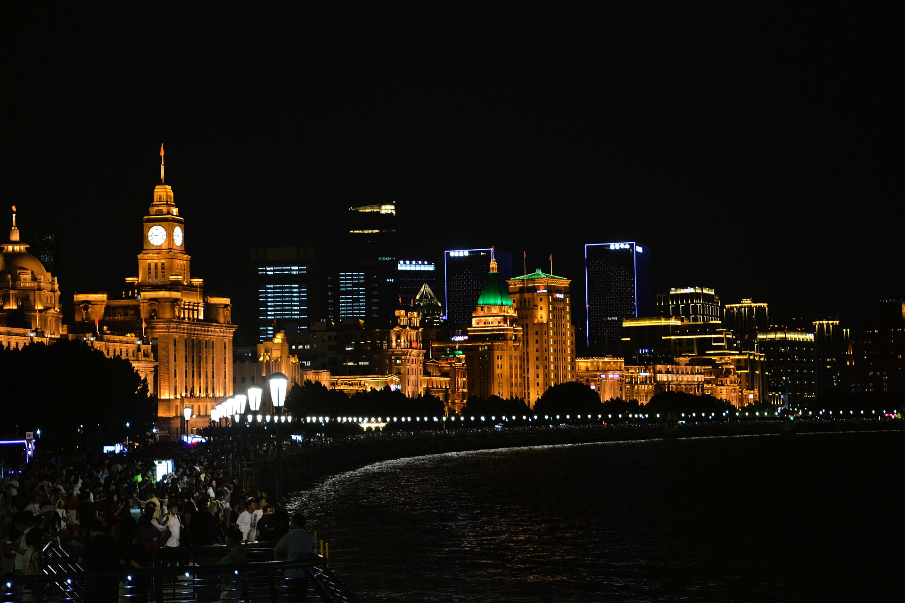
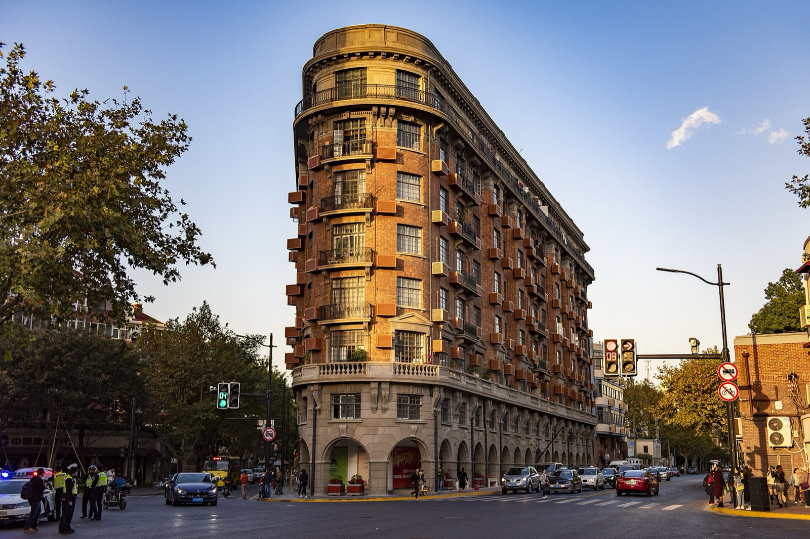
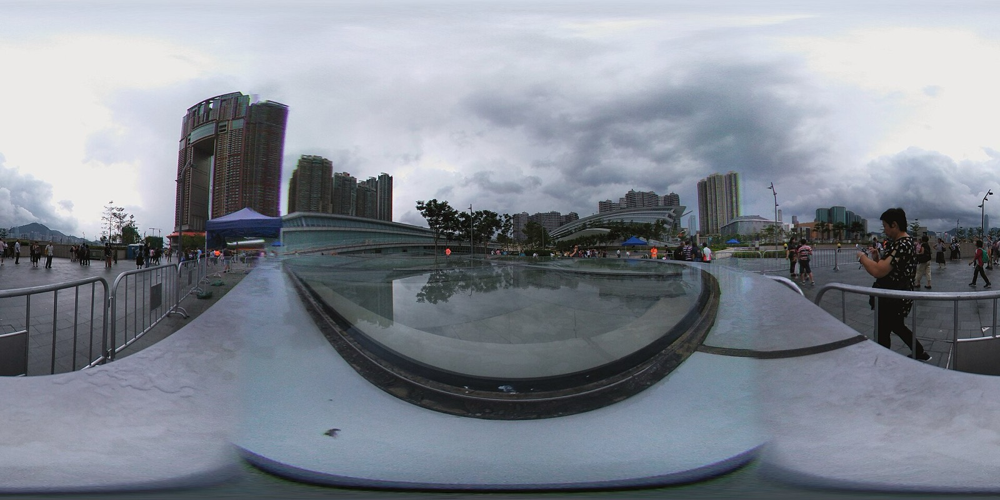

氛圍：外灘 · 法租界 · 蘇州園林 · 西九龍 overnight。
行程總覽
已確認去程動臥與回程航班；建議 11/17 排蘇州（Suzhou）一日，高鐵來回約 30 分，票尚未訂。
已訂交通
訂單以截圖為準；回程改為東航晚班，非虹橋動臥。
去程 G900 動臥
11 月 14 日（六）夜 · 訂單 E004051886
香港西九龍 20:00
上海虹橋 06:58 +1
動臥 09 車 · 檢票口 5B · 約 10 小時 58 分
回程 MU725
11 月 18 日（三）晚 · 中國東方航空
上海浦東 PVG 21:15
香港 HKG 00:15 +1
經濟艙 Z · 4 成人 · 合計 HKD 3,076
住宿（已訂）
上海虹橋荷逸唐酒店（北新涇地鐵站店） · 蒲淞北路 60 號 · 11/15 14:00 – 11/18 14:00。Trip.com 訂單 1359049126352100：兩間露台大床房（各 1 張大床；請住兩人／房並要求相鄰／同層）。步行約 320 m → 北新涇（2 號線），方便虹橋抵達與 17 日蘇州。
含每房早餐 2 位（16–18 日）及浦東機場穿梭巴士單程（每房 1 次 · 2 成人 · 須提前 2 日預約 · +86-21-62259958）。18 日 MU725 用送機，約 17:00 發車（勿選 20:00）。
乘客名單（按訂票分別列出）
高鐵與機票姓名／證件套不同；公開頁不顯示完整證件號。兩份名單各自保留，暫不合併。
G900 動臥 · 港澳居民來往內地通行證
| 姓名 | 類型 | 鋪位 |
|---|---|---|
| 吳樂融 Wu Lerong | 兒童票 | 09 車 13 下鋪 |
| 吳逸童 Wu Yitong | 成人票 | 09 車 15 下鋪 |
| 吳雨彌 Wu Yumi | 成人票 | 09 車 14 上鋪 |
| 郭燕明 Guo Yanming | 成人票 | 09 車 16 上鋪 |
MU725 · 機票姓名（英文）
| 姓名 | 票號 | 證件（遮罩） |
|---|---|---|
| NG/YIN TORNG WILLIAM | 781-2580680270 | H•••••••• |
| KWOK/YIN MING | 781-2580680268 | H•••••••• |
| NG/YU NI | 781-2580680271 | H•••••••• |
| NG/LOK YUNG | 781-2580680269 | H•••••••• |
日子怎麼分
骨架優先；景點可再細調。
- 11/14：西九龍 overnight · G900
- 11/15：虹橋早到 · 北新涇入住 · 外灘輕走
- 11/16：百联ZX（鬼滅快闪＋原神谷子）· 南京東路
- 11/17：蘇州一日 · 拙政園＋平江路（高鐵票待訂）
- 11/18：退房 · 酒店穿梭送機 · MU725
通勤速查（以北新涇為基地）
酒店步行約 320 m → 北新涇（2 號線）。市區主軸幾乎都在 2 號線上。
- 虹橋火車站：2 號線西行約 10–15 分（經淞虹路／虹橋 2 號航站樓）
- 南京東路／百联ZX：2 號線東行約 20–25 分 · 出站步行約 3 分
- 人民廣場／外灘側：2 號線至人民廣場或南京東路，再步行／短程轉乘
- 浦東機場：優先酒店約 17:00 送機；備案 2 號線東行至龍陽路轉磁浮或直通機場段（約 70–90 分）
實用提醒
抵達與離開
- 15 日清晨抵達：虹橋約 06:58；2 號線／Didi 往北新涇；酒店早餐從 16 日起算，15 日自行解決。
- 18 日晚間離境：PVG 21:15；優先酒店穿梭約 17:00 送機，預留安檢與晚高峰。
- 機場≠虹橋：回程是浦東，不要誤往虹橋高鐵。
出發前 checklist
- G900 四人動臥（訂單 E004051886）與回鄉證
- MU725 電子行程／票號截圖；確認 PVG 航廈
- 荷逸唐北新涇已訂（兩間大床房）；相鄰房＋PVG 送機已通知酒店
- 11/16：百联ZX 鬼滅「无限城」快闪預約（奥创视界）；原神谷子
- 11/17 虹橋 ↔ 蘇州／蘇州北當日來回高鐵（尚未訂）
- 拙政園旺季建議網上預約入場時段
- 11/14：西九龍預留 ≥90 分入閘、過關、找車廂
- 疊穿：11 月中旬上海白天約 12–18°C，早晚涼
小貼士
-
支付與交通
地鐵／的士／Didi 為主；支付寶／微信較方便。八達通在上海不可用。
-
動臥過夜
耳塞、眼罩、薄外套；貴重物品近身。09 車四人鋪位已相鄰。
-
名單差異
高鐵中文名與機票英文名分列；若需對應關係，出發前再向訂票人確認。